Hello!
This is a late update, but I have a good excuse: I had the opportunity to go to the Pokémon Fossil Museum in Chicago with Aidan a few days ago! It was a blast! … But it just so happened that my visit conflicted with the time I’d have used to write and publish this post. I didn’t want to bring an electronic device with me because I felt that it would’ve been too much of a hassle, and I didn’t want to publish this post earlier than usual because I wanted to write about my experience.
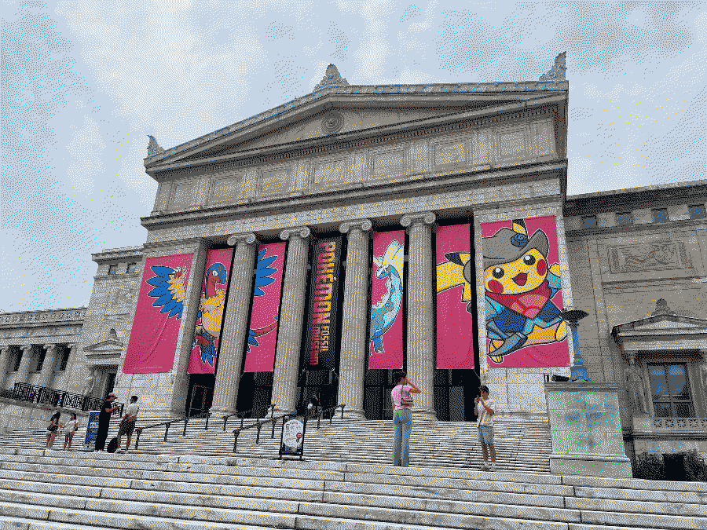
It took about an hour to look at everything in the exhibit. It was relatively short, but I liked it a lot. To be honest, I got a little emotional because I love Pokémon so much and it was super cool that I got to look at their imaginary skeletons in real life with my best friend… The fossils were supposed to be life-sized, and the Tyrantrum and Aurorus were especially big—not to mention cool as hell. It got me imagining what other Pokémon would look like if they existed in our world…
…I don’t know if I like that thought. Could you imagine trying to go to work and a Stonjourner just shows up and blocks the road like this:
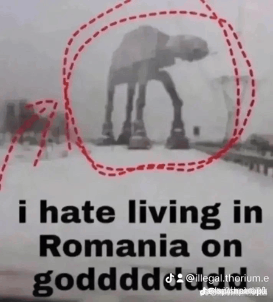
I took a lot of (bad) pictures. Here are some of them. The way the exhibition was set up was that the Pokémon fossils had their real-life animal counterparts beside them so you could compare each. For example, the Archen and Archeops exhibit featured a fossil of an Archaeopteryx, which is their direct real-life counterpart. There were also information panels for each Pokémon describing their biology, as well as dinosaurs/archaeology in general. I thought it was really cute.
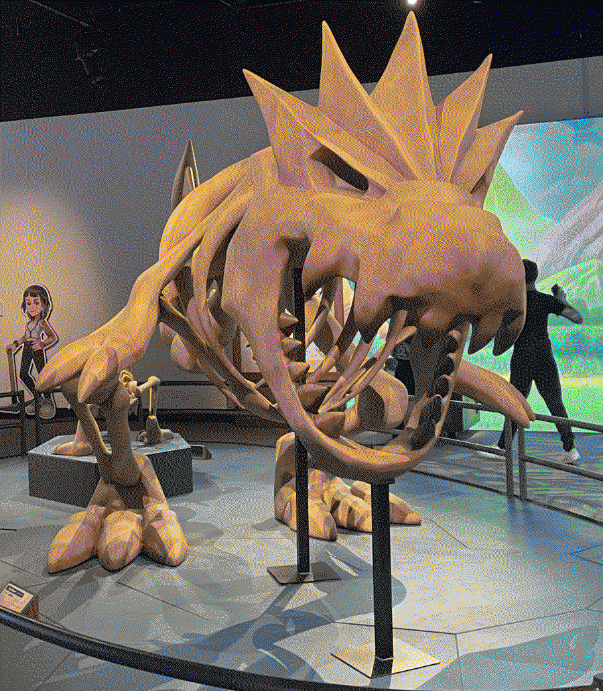
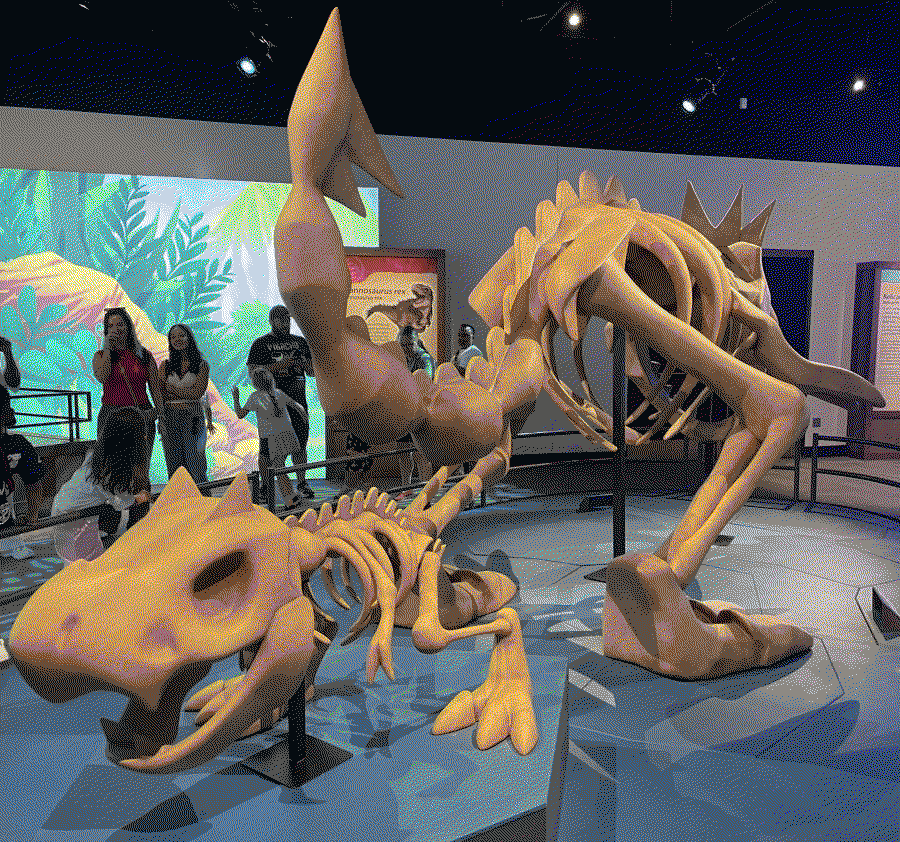
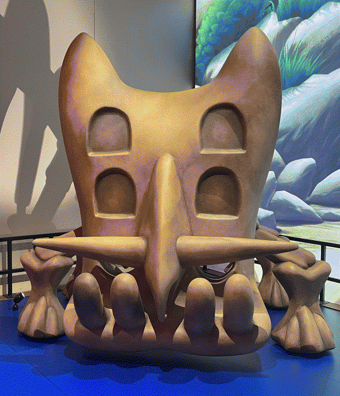
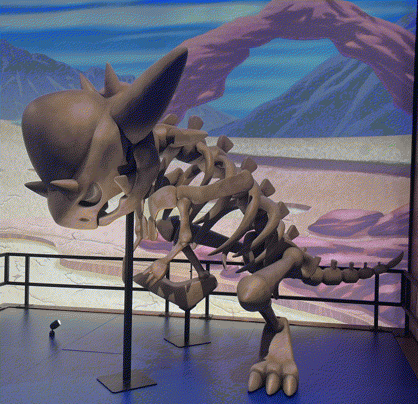
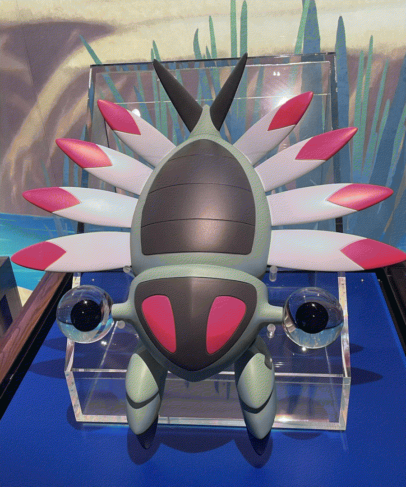
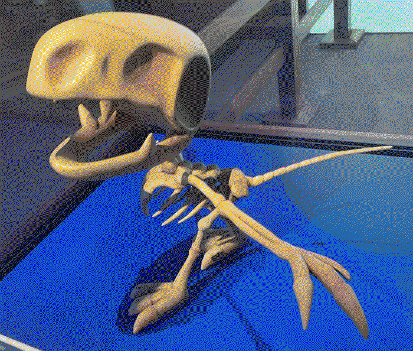
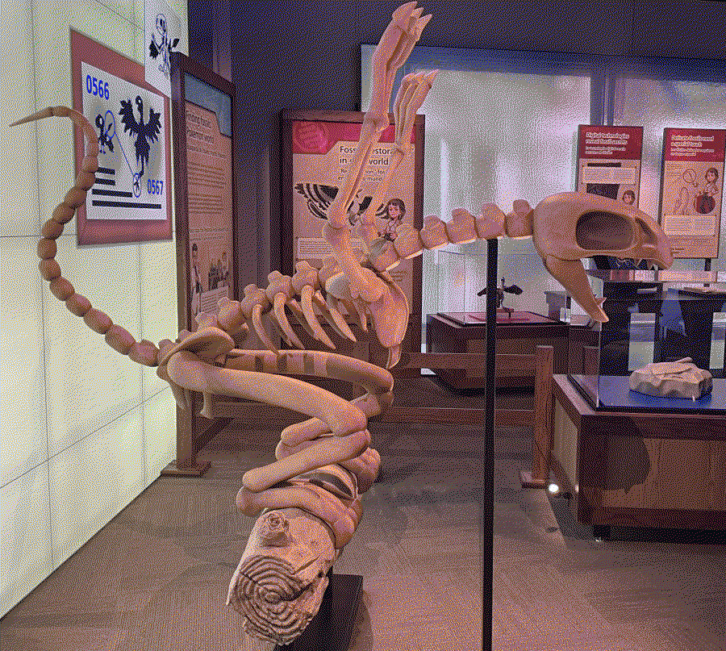
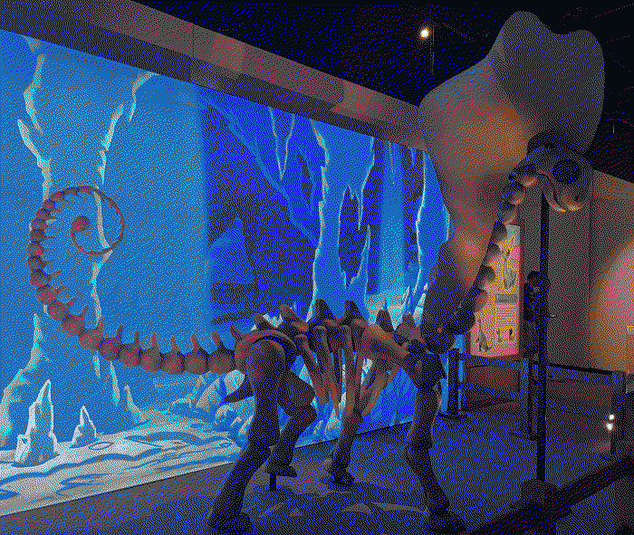
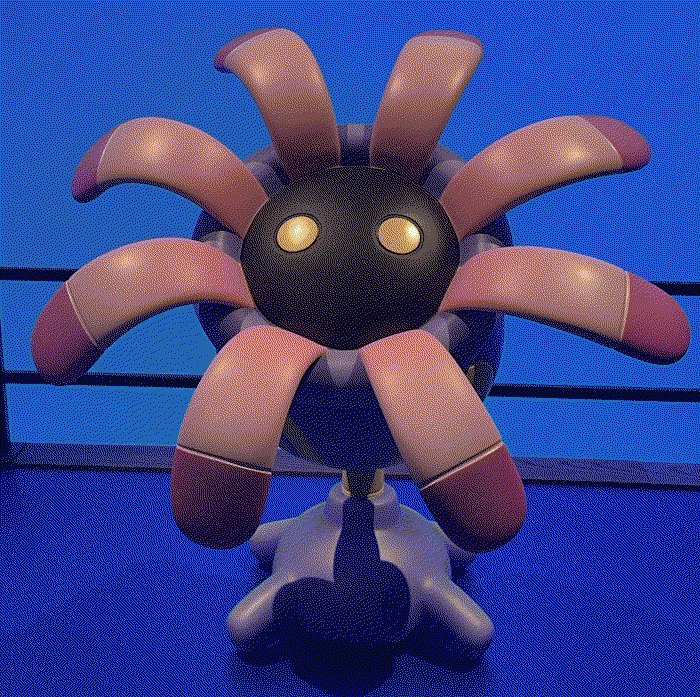
We both also got an exclusive TCG card before entering. Quite cool! I’m not someone who’s into the Pokémon TCG scene due to how expensive it is, nor do I collect Pokémon cards, so I wonder how much the card would be worth in the future if I ever sell it.
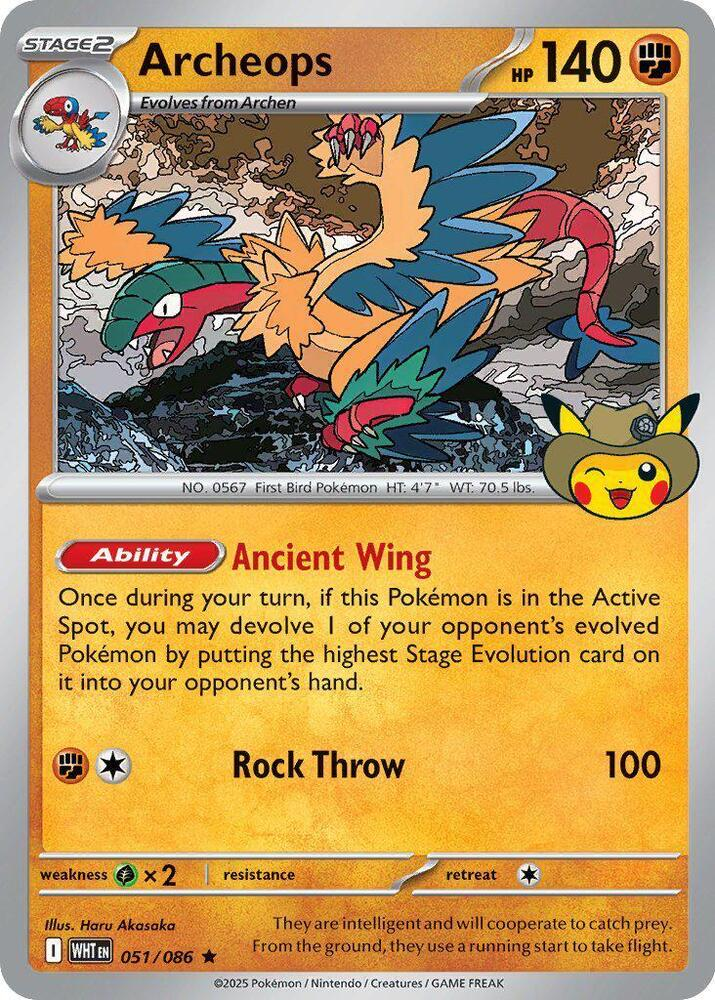
There was also a Pokémon-themed gift shop that you could only access with a voucher you get at the end of the main exhibit. They had an anti-scalper policy that limited each voucher-holder to five total items — no duplicates. We each got a cute scavenger Pikachu plushie and some shirts.
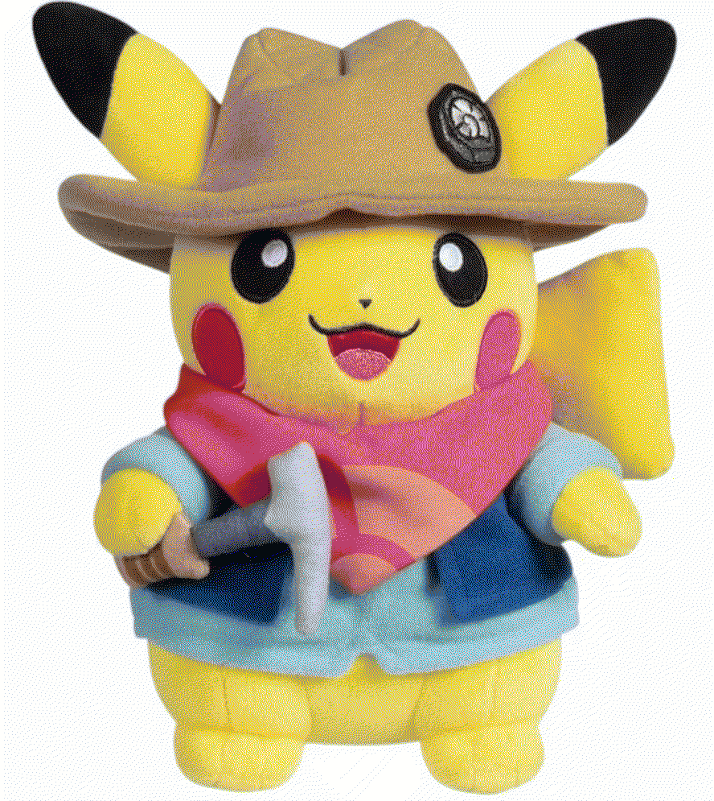
It’s kind of insane that Pokémon (especially the TCG scene) has blown up so much over the years that they had to do this. They should make a policy where people have to actually correctly name a certain amount of Pokémon within a time limit to prove that they’re actually longtime fans or something. I only say this because I can confidently name 1000+ Pokémon just by looking at them. Because I’m insane.
Aidan still plays Pokémon TCG Pocket, and he asked me to rip some packs for him. I got him two Mega Gallade EXs in a row… which is crazy. Gallade is his favorite Pokémon. We couldn’t believe it!
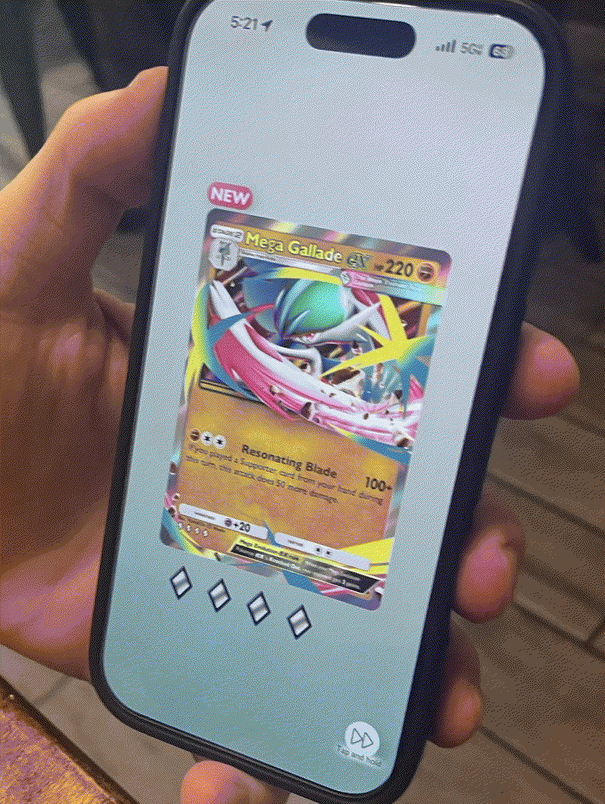
The Pokémon section isn’t over yet. I recently played a ROM hack of FRLG called “FRLG.ips” by novameow. It was introduced to me as a horror romhack, and I’m a person with a very weak heart who cannot consume any type of horror content whatsoever, but I guess something in me was so curious about the ARG aspect of it that I couldn’t help but play it for myself. Yes, you read that right: an ARG hidden inside a Pokémon horror romhack. Is that not enticing!?!?
I actually never really play Pokémon romhacks much, so this is kind of venturing into new territory for me. I’ll stumble over my words trying to explain what the romhack is about, so if you want to know, I highly recommend reading Aidan’s article on it. He goes into detail on what happens in the ROM hack and what it references/is inspired by.
My small, spoiler-free review of FRLG.ips: It’s like if a Pokémon game had a convoluted weird route you have to actively search out, as Deltarune does. The ROM hack was definitely made for fans who grew up with playground Pokémon rumours, like Mew under the truck or catching Pikablu — stuff that I never heard of until I actually started playing the ROM hack, so I suppose it didn’t hit as hard as it could’ve for me. Despite that, I’m enough of a Pokémon fan to still have enjoyed the game. There were a handful of instances where I felt chills run down my spine (probably because I’m a weenie), so I think the ROM hack did a good job of doing what it was supposed to do. It gets unsettling!!!
I had a lot of fun solving the ARG aspects of the game in order to progress, too. It gets tricky in some parts, and I had to get a lot of help from forums and the few videos that exist on this ROM hack, but when I was able to solve something myself, I always felt a huge sense of accomplishment.
The hack was made in only 5-6 months by a very small team, yet it has about 7 hours of content, which is kind of crazy. Sure, it’s quite simple, and it’s mostly dialog that takes up your time, but I think for what it is, it’s quite good. I really recommend it if you’re a longtime Pokémon fan looking for something different!
Sticker progress is going well! I actually made almost 80 new designs within the past few months, which I think is quite commendable. I’m still making new designs and getting them printed out. Here’s a sneak peek of the next batch. I made some new Pokémon, Deltarune, Dungeon Meshi, Chainsaw Man, Ghost Trick, and Nekojiru stickers!
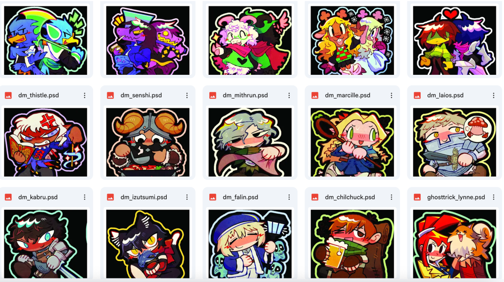
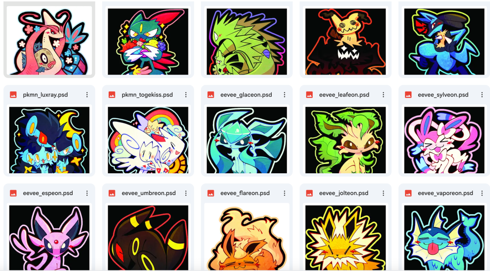
Also, on the topic of stickers, I got DMCA’d by Crunchyroll three times for my Chainsaw Man stickers, and now I can’t sell them on Etsy anymore without risking my account being suspended. I’m pissed off! Seriously, what do they gain by not letting fan artists sell CSM merch??? I’m considering opening a BigCartel within the month to try to evade future DMCA claims, and because I think letting Etsy still profit off my work is disrespectful toward me, because I know for sure Etsy doesn’t give a FUCK about its sellers!
I’m seriously considering going the merch artist + convention seller route regarding what I want to do with art. I’ve been enjoying making stickers so far, and I want to continue doing so for a long time. I’ve actually had people ask me if I could make keychains of my art, but I’m really concerned with the ethics of making acrylic products (and using shipping packaging) that would never biodegrade, and I don’t know any good local manufacturers for keychains. I know many artists use Vograce as their manufacturer, but I’m not a fan of outsourcing labor to overseas countries and underpaying them by taking advantage of the exchange rates (Westerners do that to Southeast Asia and make things worse for the locals, and I’ve seen the harm it does, and I think it’s important that — even as a singular individual — one needs to try to minimize the harm they can do). So far, the only type of merchandise I’m comfortable making is vinyl stickers and cardstock prints, and even then, those aren’t completely eco-friendly… How strange that this is what capitalism does. It’s only occurring to me how badly corporations pollute and worsen the environment just for profit.
I’ll continue to try and see what the best options are.
When I draw the monthly blog covers, I usually just draw whatever image pops into my head first. So far, I think this is… fine… but there’s a lot of room for improvement. I’ve been trying to save references of magazine covers/compositions that I can take inspiration from, but it’s really hard to make actual blog covers I’m truly happy with. I guess I just need to work harder, draw better, and study fundamentals more. I think that's why I've also been a little reluctant to post this blog on a timely schedule.
That being said, I’ve been thinking a lot about my art lately, and I honestly don’t know if I like the direction my art style is going in. I feel like my best work was from 2022/2023, and it kind of went downhill from 2024 onwards. There was something about the linework and energy my old art had that my new art lacks, and I miss it badly. It’s something that’s hard to put into words because it doesn’t seem like something tangible, but it is to me… I don’t know. I think the point I’m trying to make is that I’ve made some kind of detour with my art and I have to find a way back to the main road. It makes me wish I'd joined ArtFight this year so I could’ve practiced drawing, but I don’t regret my time working on stickers.
Ah, I’ve also been thinking of branching out regarding what I draw this year. I think it’s huge that I started making stickers, but now I’m thinking, why stop there? I’ve had some ideas for little comics featuring my OCs so people can get to know them better. They’re still something that’ll be in the works for a long time, but they’re in my head for sure, and it’s definitely something I want to execute one day. I also want to just draw more in general. I kinda fell off because I’ve had to juggle adult responsibilities with personal/work art, but I’ll get the hang of it.
That’s all. Thank you for reading!